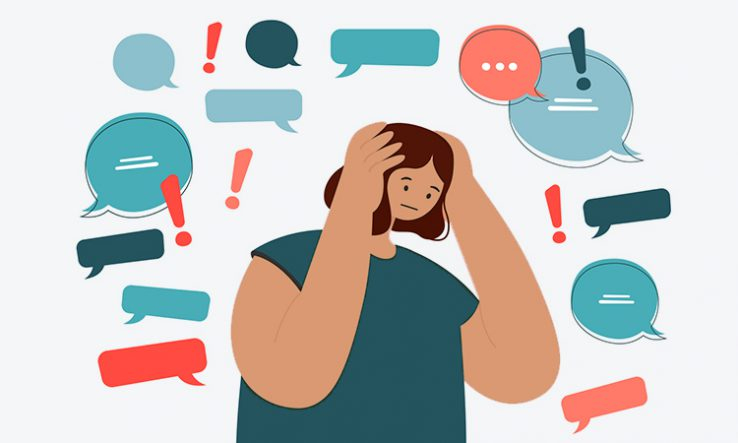

Impact of Misinformation on Society
By Jasper Cox
People love the internet, but it can’t always be trusted. Nowadays, clickbait-y headlines or fake news on social media feeds is rather common.
{kind=link}
On the web, there are three main kinds of fake information that spread rapidly. Firstly, there is misinformation, which is info that is spread, where the person spreading it is usually unaware that it is false. Secondly, there is disinformation, or false info being spread where the people spreading it know that it is false. (Disinformation usually turns into misinformation) Then finally, there is propaganda, information spread by a government or an official source that is spread to make another government or source look bad.(Read more at nyt.com)
Why does this information spread so fast?
It's no secret that information spreads like wildfires on social platforms like Twitter and Instagram, so when it comes to fake news, that fire has legs. For example, let's take this headline, “6 dead, at least 12 wounded after a shooting in downtown Sacramento, police say” This is a real article published on 4/3/22 from CNN news. This news spread like crazy, with dozens of different articles from different news sites, like NPR and New York Post, each with different takes on the event.In another example, "FBI Insider: Clinton e-mails linked to Political Pedophile s*x ring.” This story, is the infamous pizzagate theory. Both of these stories blew up on social media, but one blew up more. You guessed it, the Pizzagate one. However, the pizzagate story, was in fact, misinformation.
Now, why did this fake news spread so fast? Well, statistics show that false information spreads faster during times of panic and crisis. For example, take the increase in fake health articles during the peak of quarantine, or the amount of election fraud articles during November and December of 2021. However, there is one secret, manipulative trick. The majority of social platforms, such as Facebook, know that the mis/disinformation is false, and they continue to reshare it so that the platform gains more traffic. This might be awful for consumers, but it’s perfect for those companies.
{kind=link}
{kind=link}
"You are the product."
-Tristan Harris, The Social DilemmaThese fake stories might seem harmless, but in fact, they have intense consequences. According to the documentary, “Trust Me”, by director Roko Belic, the majority of parents and guardians are afraid to let their children be children because of an increased threat of child predators, such as the ones suspected in the pizzagate theory. (Learn more at CITS )
Why would governments spread propaganda?
After 2021, we all know that forces of power are not afraid to go to insane limits to make us believe lies, and this actually has a name. Propaganda, or government-created false information, spreads insanely fast on social media, and there are a few reasons why. Usually, leaders, such as mayors, senators, and even presidents, have large, devoted supporters, and they often share whatever they can to get the word of that person out, even if it’s a blatant lie.
{kind=link}
But why would someone spread this information? Powerful leaders often spread false info so they can get more supporters and gain popularity. Tying back to the social media issues, it’s possible to see how social media makes this spreading even broader. With some clever wordplay, and a bit of clickbait, people can make news seem incredibly urgent and freak people out, and with some sly manipulation, they can make anything believable.(Learn more at economist.com)